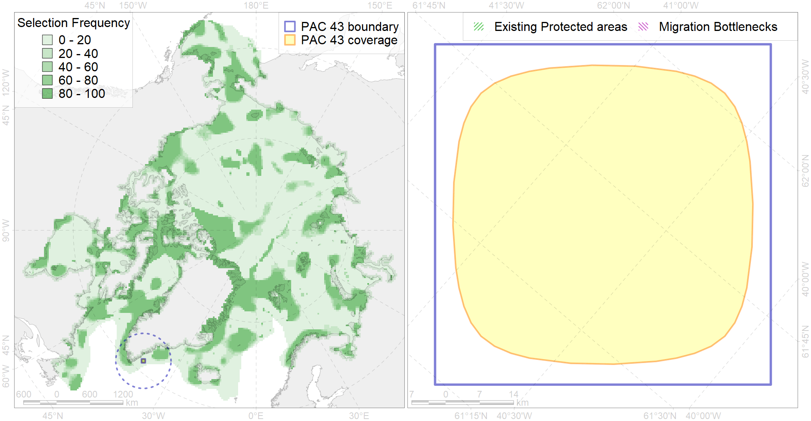

Region 43
Region 43
“ArcNet” scenario 33 achievement for region 43.
Use Accenter for advanced mode.

0
CFs inside of Region completely
0
CFs inside of Region at quarter
0
Complete-targets achievement by Region
0
Half-targets achievement by Region
| CF | Name | Target Achievement for Region | Proportion of Target Achievement in Region | Amount Proportion in Region |
|---|---|---|---|---|
| 7189 | VI.1.8. Seamounts | 8.2% | 8.1% | 8.1% |
| 7163 | III.6.2. Southwest Greenland slope | 13.4% | 5.8% | 2.1% |
| 5048 | Fin whale summer feeding areas in the East Greenland and West Iceland | 3.4% | 3.4% | 1.0% |
| 7171 | VII.1. Greenland Sea and Fram Strait Basin basins VII.1.1. Rises (slope foot) | 5.5% | 4.6% | 0.8% |
| 3025 | Marginal Ice Zone distribution in April in the Greenland Sea LME | 1.0% | 1.0% | 0.5% |
| 7160 | III.6.1. Southeast Greenland shelf | 2.8% | 0.7% | 0.4% |
| 6034 | Ivory gull (Pagophila eburnea) Atlantic wintering grounds | 1.6% | 0.8% | 0.4% |
| 5098 | White-beaked dolphin feeding area in the Central North Atlantic | 1.7% | 0.6% | 0.3% |
| 4028 | Feeding/migration area of the Atlantic salmon (Salmo salar) American populations (F27) | 2.1% | 0.7% | 0.3% |
| 4085 | Fish zoogeography, Arctic Region, Subarctic Transitional-Atlantic Province, Labrador – S Greenland District | 2.9% | 0.6% | 0.3% |
| 7162 | III.6.1.2. SE Greenland glacial troughs | 1.7% | 0.5% | 0.3% |
| 5059 | Humpback whale summer feeding areas in the Eastern Greenland and Iceland | 1.3% | 0.4% | 0.2% |
| 6002 | Little Auk (Alle alle alle) winetring grounds | 0.7% | 0.5% | 0.2% |
| 6076 | Common murre (Uria aalge aalge) wintering grounds | 0.9% | 0.5% | 0.2% |
| 4049 | Range of the Haddock (Melanogrammus aeglefinus) (F 42) | 2.5% | 0.4% | 0.2% |
| 4055 | Range of the Shorthorn Sculpin (Myoxocephalus scorpius) (F 46), American populations | 4.0% | 0.2% | 0.1% |
| 6023 | Atlantic puffin (Fratercula arctica naumanni) wintering grounds | 0.5% | 0.4% | 0.1% |
| 4032 | Range of the Arctic skate (Amblyraja hyperborea) (F2) | 3.5% | 0.3% | 0.1% |
| 6049 | Black-legged kittiwake (Rissa tridactyla tridactyla) wintering grounds | 0.3% | 0.3% | 0.1% |
| 4046 | Range of the Thorny Skate (Amblyraja radiata) (F 3) | 1.1% | 0.2% | 0.1% |
| 4045 | Feeding/migration area of the Pink Salmon (Oncorhynchus gorbuscha), native distribution (F23) | 1.2% | 0.2% | 0.1% |
| 4059 | Range of the Greenland Halibut (Reinhardtius hippoglossoides) (F 49) | 2.3% | 0.2% | 0.1% |
| 6083 | Thick-billed murre (Uria lomvia lomvia) wintering grounds | 0.3% | 0.2% | 0.1% |
| 4003 | Range of the Atlantic Capelin (Mallotus villosus) (F10) | 2.1% | 0.2% | 0.1% |
| 4056 | Distribution of the American Plaice (Hippoglossoides platessoides) (F 47), European populations | 1.9% | 0.1% | 0.1% |
| 4017 | Feeding/ migration area of the Greenland Shark (Somniosus microcephalus) (F1) | 0.3% | 0.2% | 0.1% |
| 2047 | Ringed seal whelping areas in Greenland region | 0.2% | 0.0% | 0.0% |
| 7161 | III.6.1.1. SE Greenland medium and low profile shelf | 0.2% | 0.1% | 0.0% |
| 4041 | Range of the Polar Cod (Boreogadus saida) (F35) | 0.1% | 0.0% | 0.0% |
| 9006 | polar bear of the EG (East Greenland) subpopulation distribution | 0.0% | 0.0% | 0.0% |
| 7174 | VII.1.4. Abyssal mountains | 0.0% | 0.0% | 0.0% |
| 7173 | VII.1.3. Abyssal hills | 0.0% | 0.0% | 0.0% |